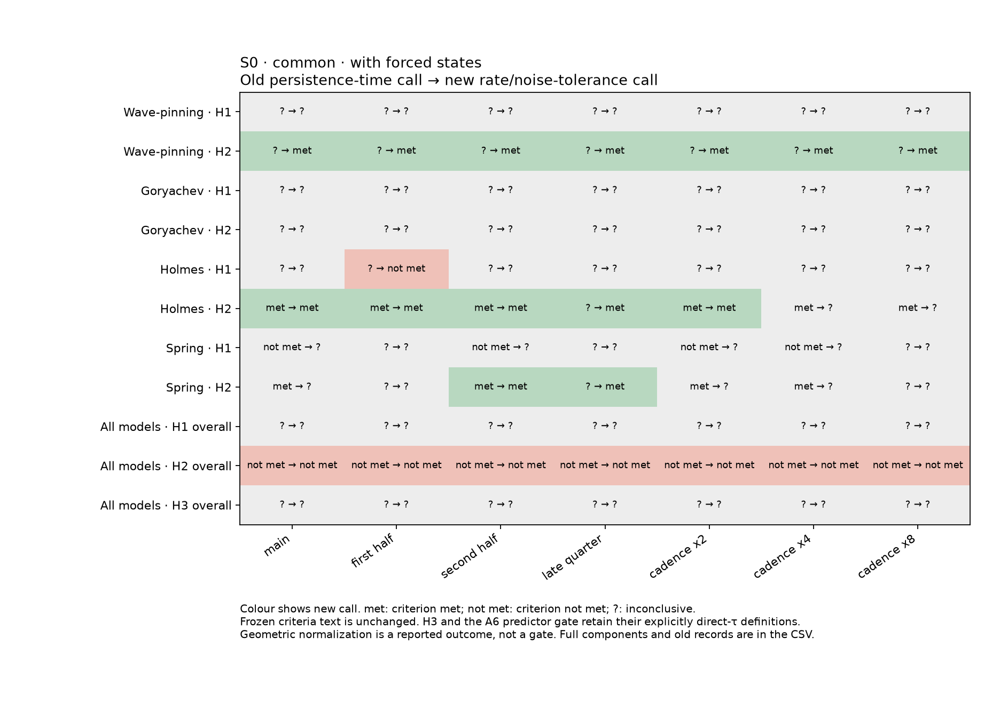
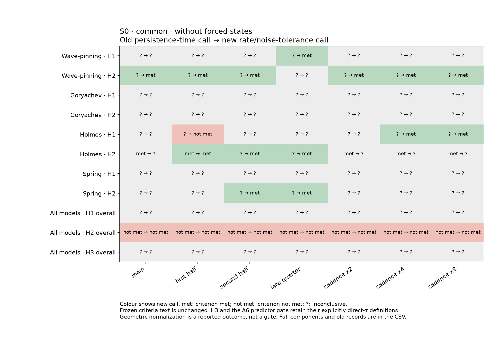
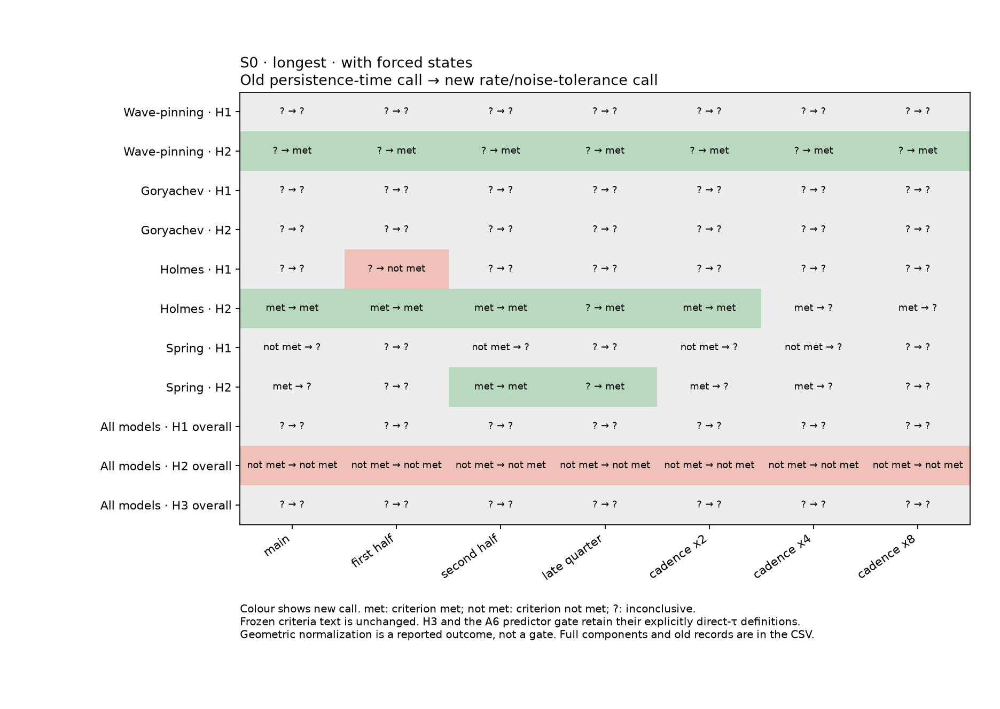

Generated 2026-10-22T01:26:33.930811+00:00. Static interim; analysis producer has finished. No timed refresh.
Case B: the complete frozen H1 remains inconclusive in the common and longest main-view arms without forced conditions. Its unchanged requirement is a ratio CI strictly above one at every evaluable input, no supported reversal, and non-overlapping size noise-tolerance CIs; weak-to-intermediate gains alone do not satisfy it. At input 0.003, the rate ratios are 19.12, 11.00, 7.55 for Wave-pinning, Holmes and Spring; at 0.05 they are 4.63, 2.53, 1.18, with geometric-normalized ratios 0.51, 0.28, 0.14 and multiple-front majorities. Thus resolved size gains can coexist with erosion below the single-front geometric expectation, while Spring's 0.05 ratio CI includes one. Main-view size noise-tolerance CIs separate in these three models. Goryachev remains coverage/lag/forcing qualified. Updated H2 model calls are reported, but H2 overall retains its legacy direct-time A6 predictor gate, and H3 retains its legacy time-bound definition; neither is a fully revalidated rate-based hypothesis. Stop for review before rebuilding the Figure 4 main.
Integrated outline_v5 · Combined interim supplement · Full interim reader and CSVs
Figures 2–3 and the Figure 4 main retain their previous artwork pending review. Figures 1, 5 and 6 are unchanged.





Enlarged cells resist imposed replacement through model-specific response signatures (Figure 2). Larger rings can support more widely separated active regions, whose cue-free resolution can be slow in mass-conserved models (Figure 3). Case B: the complete frozen H1 remains inconclusive in the common and longest main-view arms without forced conditions. Its unchanged requirement is a ratio CI strictly above one at every evaluable input, no supported reversal, and non-overlapping size noise-tolerance CIs; weak-to-intermediate gains alone do not satisfy it. At input 0.003, the rate ratios are 19.12, 11.00, 7.55 for Wave-pinning, Holmes and Spring; at 0.05 they are 4.63, 2.53, 1.18, with geometric-normalized ratios 0.51, 0.28, 0.14 and multiple-front majorities. Thus resolved size gains can coexist with erosion below the single-front geometric expectation, while Spring's 0.05 ratio CI includes one. Main-view size noise-tolerance CIs separate in these three models. Goryachev remains coverage/lag/forcing qualified. Updated H2 model calls are reported, but H2 overall retains its legacy direct-time A6 predictor gate, and H3 retains its legacy time-bound definition; neither is a fully revalidated rate-based hypothesis. Stop for review before rebuilding the Figure 4 main. These are polarity-heading readouts; observed migration summaries and conditional OU velocity-memory estimates remain separate evidence.